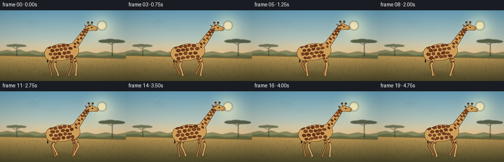
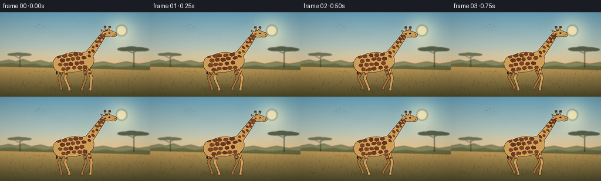
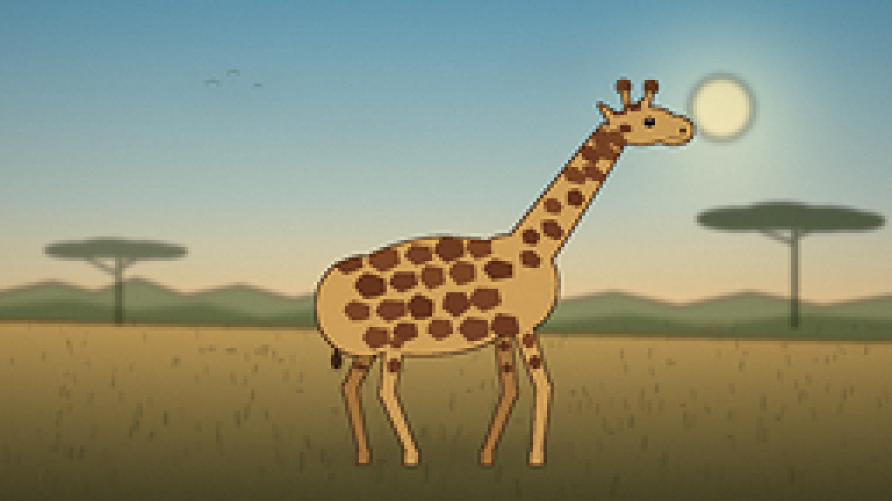
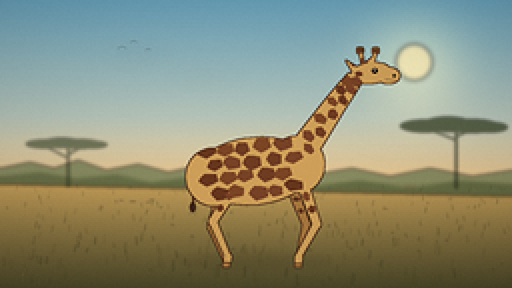

CODING AGENTS AS PIXEL WORLD MODELS
traex/DeepSeek-V4.1-Flash · instance_preservation_0010
点击播放 · 原生 RGB 像素
逐轮保存的候选
回放视频、检查图与代码变化。
每份候选均可单独播放。实际图片检查记录在下方工具轨迹中。
候选 01播放与检查图
点击播放 · 原生 RGB 像素

展开代码变化
--- 上一保存版本
+++ 本次保存版本
@@ -0,0 +1,762 @@
+from __future__ import annotations
+
+import math
+import random
+from pathlib import Path
+
+import numpy as np
+from PIL import Image, ImageChops, ImageDraw, ImageFilter
+
+import artifact_io
+
+
+W, H = 256, 144
+S = 4
+RW, RH = W * S, H * S
+N = 20
+FPS = 4
+
+
+def rgba(hex_color: str, alpha: int = 255) -> tuple[int, int, int, int]:
+ value = hex_color.lstrip("#")
+ return tuple(int(value[i : i + 2], 16) for i in (0, 2, 4)) + (alpha,)
+
+
+def canvas() -> Image.Image:
+ return Image.new("RGBA", (RW, RH), (0, 0, 0, 0))
+
+
+def points(values: list[tuple[float, float]]) -> list[tuple[float, float]]:
+ return [(x * S, y * S) for x, y in values]
+
+
+def polygon(draw: ImageDraw.ImageDraw, values: list[tuple[float, float]], fill) -> None:
+ draw.polygon(points(values), fill=fill)
+
+
+def ellipse(
+ draw: ImageDraw.ImageDraw,
+ center: tuple[float, float],
+ radii: tuple[float, float],
+ fill,
+ angle: float = 0.0,
+ count: int = 64,
+) -> None:
+ cx, cy = center
+ rx, ry = radii
+ c, s = math.cos(angle), math.sin(angle)
+ shape = []
+ for index in range(count):
+ theta = math.tau * index / count
+ x, y = rx * math.cos(theta), ry * math.sin(theta)
+ shape.append((cx + x * c - y * s, cy + x * s + y * c))
+ polygon(draw, shape, fill)
+
+
+def smoothstep(value: float) -> float:
+ value = min(1.0, max(0.0, value))
+ return value * value * (3.0 - 2.0 * value)
+
+
+def rotated_ellipse_points(
+ center: tuple[float, float],
+ radii: tuple[float, float],
+ angle: float,
+ count: int = 10,
+ jitter: list[float] | None = None,
+) -> list[tuple[float, float]]:
+ cx, cy = center
+ rx, ry = radii
+ c, s = math.cos(angle), math.sin(angle)
+ shape = []
+ for index in range(count):
+ theta = math.tau * index / count
+ local_rx = rx * (jitter[index] if jitter else 1.0)
+ local_ry = ry * (jitter[index] if jitter else 1.0)
+ x, y = local_rx * math.cos(theta), local_ry * math.sin(theta)
+ shape.append((cx + x * c - y * s, cy + x * s + y * c))
+ return shape
+
+
+def tapered_segment(
+ start: tuple[float, float],
+ end: tuple[float, float],
+ start_width: float,
+ end_width: float,
+) -> list[tuple[float, float]]:
+ dx, dy = end[0] - start[0], end[1] - start[1]
+ length = max(1e-5, math.hypot(dx, dy))
+ nx, ny = -dy / length, dx / length
+ return [
+ (start[0] + nx * start_width / 2, start[1] + ny * start_width / 2),
+ (start[0] - nx * start_width / 2, start[1] - ny * start_width / 2),
+ (end[0] - nx * end_width / 2, end[1] - ny * end_width / 2),
+ (end[0] + nx * end_width / 2, end[1] + ny * end_width / 2),
+ ]
+
+
+def limb_geometry(
+ hip: tuple[float, float],
+ phase: float,
+ offset: float,
+ ground: float,
+ bend_sign: float,
+ stride: float = 4.2,
+ lift_height: float = 3.1,
+) -> tuple[tuple[float, float], tuple[float, float], tuple[float, float]]:
+ p = phase + offset
+ foot_x = hip[0] + stride * math.cos(p)
+ swing = max(0.0, -math.sin(p))
+ lift = lift_height * swing**1.35
+ foot = (foot_x, ground - lift)
+
+ dx, dy = foot[0] - hip[0], foot[1] - hip[1]
+ distance = max(1e-5, math.hypot(dx, dy))
+ upper_length = 18.6
+ lower_length = 18.6
+ along = (
+ upper_length * upper_length
+ - lower_length * lower_length
+ + distance * distance
+ ) / (2.0 * distance)
+ bend = math.sqrt(max(0.0, upper_length * upper_length - along * along))
+ mx = hip[0] + dx * along / distance
+ my = hip[1] + dy * along / distance
+ px, py = -dy / distance, dx / distance
+ knee = (mx + bend_sign * bend * px, my + bend_sign * bend * py)
+ return hip, knee, foot
+
+
+def draw_limb(
+ draw: ImageDraw.ImageDraw,
+ hip: tuple[float, float],
+ knee: tuple[float, float],
+ foot: tuple[float, float],
+ near: bool,
+ fill,
+) -> None:
+ upper_start = 5.2 if near else 4.5
+ upper_end = 3.6 if near else 3.2
+ lower_end = 2.45 if near else 2.2
+ polygon(draw, tapered_segment(hip, knee, upper_start, upper_end), fill)
+ polygon(draw, tapered_segment(knee, foot, upper_end, lower_end), fill)
+ ellipse(draw, knee, (upper_end * 0.56, upper_end * 0.56), fill)
+ ellipse(draw, foot, (lower_end * 0.58, lower_end * 0.58), fill)
+
+ hoof_top = 1.75 if near else 1.55
+ hoof = [
+ (foot[0] - hoof_top, foot[1] + 0.1),
+ (foot[0] + hoof_top, foot[1] + 0.1),
+ (foot[0] + hoof_top * 0.88, foot[1] + 3.1),
+ (foot[0] - hoof_top * 0.98, foot[1] + 3.1),
+ ]
+ polygon(draw, hoof, fill)
+
+
+def neck_centerline(
+ base: tuple[float, float], top: tuple[float, float], sway: float
+) -> list[tuple[float, float]]:
+ bx, by = base
+ tx, ty = top
+ dx, dy = tx - bx, ty - by
+ nx, ny = -dy, dx
+ norm = max(1e-5, math.hypot(nx, ny))
+ nx, ny = nx / norm, ny / norm
+ return [
+ (bx, by),
+ (bx + dx * 0.31 + nx * sway * 0.35, by + dy * 0.31 + ny * sway * 0.35),
+ (bx + dx * 0.64 + nx * sway * 0.55, by + dy * 0.64 + ny * sway * 0.55),
+ (bx + dx * 0.86 + nx * sway * 0.25, by + dy * 0.86 + ny * sway * 0.25),
+ (tx, ty),
+ ]
+
+
+def neck_polygon(centerline: list[tuple[float, float]]) -> list[tuple[float, float]]:
+ widths = [13.8, 12.3, 10.4, 8.9, 7.4]
+ left, right = [], []
+ for index, point in enumerate(centerline):
+ if index == 0:
+ dx = centerline[1][0] - point[0]
+ dy = centerline[1][1] - point[1]
+ elif index == len(centerline) - 1:
+ dx = point[0] - centerline[index - 1][0]
+ dy = point[1] - centerline[index - 1][1]
+ else:
+ dx = centerline[index + 1][0] - centerline[index - 1][0]
+ dy = centerline[index + 1][1] - centerline[index - 1][1]
+ length = max(1e-5, math.hypot(dx, dy))
+ nx, ny = -dy / length, dx / length
+ half = widths[index] / 2
+ left.append((point[0] + nx * half, point[1] + ny * half))
+ right.append((point[0] - nx * half, point[1] - ny * half))
+ return left + right[::-1]
+
+
+def silhouette_from_shapes(
+ size: tuple[int, int],
+ shape_commands: list[tuple],
+ fill,
+) -> Image.Image:
+ layer = Image.new("RGBA", size, (0, 0, 0, 0))
+ draw = ImageDraw.Draw(layer)
+ for command in shape_commands:
+ kind = command[0]
+ if kind == "polygon":
+ polygon(draw, command[1], fill)
+ elif kind == "ellipse":
+ ellipse(draw, command[1], command[2], fill, command[3] if len(command) > 3 else 0.0)
+ return layer
+
+
+def add_pattern_and_outline(
+ layer: Image.Image,
+ spots: list[tuple[tuple[float, float], tuple[float, float], float, str]],
+ outline: tuple[int, int, int, int],
+ shadow_rgb: tuple[int, int, int],
+ highlight_rgb: tuple[int, int, int],
+ anchor: tuple[float, float],
+ outline_size: int = 5,
+) -> Image.Image:
+ mask = layer.getchannel("A")
+ pattern = canvas()
+ draw = ImageDraw.Draw(pattern)
+ for center, radii, angle, color in spots:
+ jitter = [0.84, 1.05, 0.91, 1.1, 0.88, 1.02, 0.94, 1.08, 0.86, 1.0]
+ shape = rotated_ellipse_points(center, radii, angle, 10, jitter)
+ polygon(draw, shape, rgba(color, 255))
+ pattern.putalpha(ImageChops.multiply(pattern.getchannel("A"), mask))
+ layer.alpha_composite(pattern)
+
+ mask_np = np.asarray(mask, dtype=np.float32) / 255.0
+ yy, xx = np.mgrid[0:RH, 0:RW]
+ xf = xx / (W * S)
+ yf = yy / (H * S)
+ ax, ay = anchor
+ right_light = np.clip((xf - (ax - 32.0)) / 68.0, 0.0, 1.0)
+ top_light = np.clip(((ay + 18.0) - yf) / 90.0, 0.0, 1.0)
+
+ dark_alpha = np.clip(mask_np * (24.0 * (1.0 - right_light) + 8.0 * (1.0 - top_light)), 0, 42)
+ dark = np.zeros((RH, RW, 4), dtype=np.uint8)
+ dark[:, :, 0], dark[:, :, 1], dark[:, :, 2] = shadow_rgb
+ dark[:, :, 3] = dark_alpha.astype(np.uint8)
+ layer.alpha_composite(Image.fromarray(dark, "RGBA"))
+
+ light_alpha = np.clip(mask_np * (5.0 + 20.0 * right_light * top_light), 0, 30)
+ light = np.zeros((RH, RW, 4), dtype=np.uint8)
+ light[:, :, 0], light[:, :, 1], light[:, :, 2] = highlight_rgb
+ light[:, :, 3] = light_alpha.astype(np.uint8)
+ layer.alpha_composite(Image.fromarray(light, "RGBA"))
+
+ dilated = mask.filter(ImageFilter.MaxFilter(outline_size))
+ edge = ImageChops.subtract(dilated, mask)
+ edge_layer = Image.new("RGBA", layer.size, outline)
+ edge_layer.putalpha(edge.point(lambda value: int(value * 0.92)))
+ layer.alpha_composite(edge_layer)
+ return layer
+
+
+def make_background() -> Image.Image:
+ yy, xx = np.mgrid[0:RH, 0:RW]
+ xf = xx / S
+ yf = yy / S
+
+ top = np.array([105.0, 164.0, 190.0])
+ middle = np.array([178.0, 194.0, 184.0])
+ horizon = np.array([246.0, 205.0, 143.0])
+ t = np.clip(yf / 94.0, 0.0, 1.0)
+ upper = np.where((t < 0.62)[..., None], top + (middle - top) * (t / 0.62)[..., None], middle + (horizon - middle) * ((t - 0.62) / 0.38)[..., None])
+
+ ground_t = np.clip((yf - 91.0) / (H - 91.0), 0.0, 1.0)
+ ground_far = np.array([204.0, 166.0, 96.0])
+ ground_near = np.array([77.0, 75.0, 45.0])
+ ground = ground_far + (ground_near - ground_far) * (ground_t**0.82)[..., None]
+ image = np.where((yf >= 91.0)[..., None], ground, upper)
+
+ sun_x, sun_y = 207.0, 31.0
+ radius2 = (xf - sun_x) ** 2 + (yf - sun_y) ** 2
+ glow = np.exp(-radius2 / (2.0 * 18.0**2))
+ image += glow[..., None] * np.array([55.0, 38.0, 13.0])
+ image = np.clip(image, 0, 255)
+ scene = Image.fromarray(image.astype(np.uint8), "RGB").convert("RGBA")
+
+ haze = canvas()
+ hdraw = ImageDraw.Draw(haze)
+ for y, alpha in [(82, 34), (86, 38), (90, 28)]:
+ hdraw.rectangle((0, y * S, RW, (y + 2.2) * S), fill=(255, 225, 174, alpha))
+ haze = haze.filter(ImageFilter.GaussianBlur(5 * S))
+ scene.alpha_composite(haze)
+
+ sun = canvas()
+ sdraw = ImageDraw.Draw(sun)
+ sdraw.ellipse(
+ (
+ (sun_x - 9.0) * S,
+ (sun_y - 9.0) * S,
+ (sun_x + 9.0) * S,
+ (sun_y + 9.0) * S,
+ ),
+ fill=(255, 239, 184, 195),
+ )
+ sun = sun.filter(ImageFilter.GaussianBlur(1.2 * S))
+ scene.alpha_composite(sun)
+
+ clouds = canvas()
+ cdraw = ImageDraw.Draw(clouds)
+ cloud_specs = [
+ (69, 28, 26, 2.1, 25),
+ (102, 38, 34, 1.7, 19),
+ (161, 18, 30, 1.5, 18),
+ (187, 48, 37, 1.9, 20),
+ ]
+ for cx, cy, width, height, alpha in cloud_specs:
+ cdraw.ellipse(
+ ((cx - width / 2) * S, (cy - height / 2) * S, (cx + width / 2) * S, (cy + height / 2) * S),
+ fill=(255, 245, 218, alpha),
+ )
+ clouds = clouds.filter(ImageFilter.GaussianBlur(4 * S))
+ scene.alpha_composite(clouds)
+
+ hills = canvas()
+ hd = ImageDraw.Draw(hills)
+ far_hill = [
+ (0, 91),
+ (0, 84),
+ (15, 81),
+ (27, 84),
+ (39, 80),
+ (53, 85),
+ (69, 82),
+ (84, 86),
+ (103, 82),
+ (122, 86),
+ (139, 83),
+ (158, 87),
+ (176, 84),
+ (195, 88),
+ (215, 84),
+ (236, 88),
+ (256, 85),
+ (256, 94),
+ ]
+ polygon(hd, far_hill, (122, 131, 92, 225))
+ near_hill = [
+ (0, 92),
+ (0, 88),
+ (20, 86),
+ (38, 89),
+ (58, 87),
+ (75, 91),
+ (97, 88),
+ (116, 92),
+ (138, 89),
+ (158, 93),
+ (180, 90),
+ (205, 94),
+ (230, 90),
+ (256, 92),
+ (256, 98),
+ ]
+ polygon(hd, near_hill, (91, 103, 67, 235))
+ hills = hills.filter(ImageFilter.GaussianBlur(0.9 * S))
+ scene.alpha_composite(hills)
+
+ trees = canvas()
+ td = ImageDraw.Draw(trees)
+ tree_color = (60, 73, 47, 220)
+
+ def acacia(base_x: float, base_y: float, height: float, width: float, alpha: int) -> None:
+ color = tree_color[:3] + (alpha,)
+ top_y = base_y - height
+ td.line(
+ [(base_x * S, base_y * S), (base_x * S, top_y * S)],
+ fill=color,
+ width=max(1, int(1.4 * S)),
+ )
+ td.line(
+ [(base_x * S, (top_y + 7) * S), ((base_x - width * 0.3) * S, (top_y + 2) * S)],
+ fill=color,
+ width=max(1, int(1.1 * S)),
+ )
+ td.line(
+ [(base_x * S, (top_y + 5) * S), ((base_x + width * 0.27) * S, top_y * S)],
+ fill=color,
+ width=max(1, int(1.1 * S)),
+ )
+ for ox, oy, rx, ry in [
+ (-0.38, 0.0, 0.3, 0.1),
+ (-0.1, -0.03, 0.3, 0.12),
+ (0.2, 0.0, 0.32, 0.11),
+ (0.42, 0.02, 0.21, 0.08),
+ ]:
+ td.ellipse(
+ (
+ (base_x + ox * width - rx * width) * S,
+ (top_y + oy * height - ry * height) * S,
+ (base_x + ox * width + rx * width) * S,
+ (top_y + oy * height + ry * height) * S,
+ ),
+ fill=color,
+ )
+
+ acacia(34, 93, 21, 31, 165)
+ acacia(228, 94, 31, 41, 205)
+ trees = trees.filter(ImageFilter.GaussianBlur(0.75 * S))
+ scene.alpha_composite(trees)
+
+ ground_detail = canvas()
+ gd = ImageDraw.Draw(ground_detail)
+ rng = random.Random(83)
+ for _ in range(260):
+ y = rng.uniform(94, 143)
+ depth = (y - 94) / 49
+ x = rng.uniform(0, W)
+ length = rng.uniform(1.0, 2.4) + depth * rng.uniform(1.2, 4.0)
+ lean = rng.uniform(-0.7, 0.7)
+ color = rng.choice(
+ [
+ (105, 98, 53, 88),
+ (126, 111, 58, 82),
+ (75, 78, 45, 100),
+ (153, 132, 68, 72),
+ ]
+ )
+ gd.line(
+ [(x * S, y * S), ((x + lean) * S, (y - length) * S)],
+ fill=color,
+ width=max(1, int((0.45 + depth * 0.55) * S)),
+ )
+ for _ in range(32):
+ x = rng.uniform(4, W - 4)
+ y = rng.uniform(99, 140)
+ rx = rng.uniform(0.5, 1.7)
+ ry = rng.uniform(0.2, 0.65)
+ gd.ellipse(
+ ((x - rx) * S, (y - ry) * S, (x + rx) * S, (y + ry) * S),
+ fill=(57, 55, 37, rng.randint(40, 80)),
+ )
+ ground_detail = ground_detail.filter(ImageFilter.GaussianBlur(0.25 * S))
+ scene.alpha_composite(ground_detail)
+
+ birds = canvas()
+ bd = ImageDraw.Draw(birds)
+ for bx, by, scale in [(61, 24, 1.0), (67, 21, 0.8), (74, 25, 0.65)]:
+ bd.line(
+ [((bx - 2.2 * scale) * S, by * S), (bx * S, (by - 0.8 * scale) * S), ((bx + 2.0 * scale) * S, by * S)],
+ fill=(52, 65, 58, 170),
+ width=max(1, int(0.42 * S)),
+ joint="curve",
+ )
+ scene.alpha_composite(birds)
+ return scene
+
+
+def giraffe_spots(
+ body_center: tuple[float, float],
+ body_angle: float,
+ neck_line: list[tuple[float, float]],
+ near_limbs: list[tuple[tuple[float, float], tuple[float, float], tuple[float, float]]],
+ seed: int,
+ dark_palette: list[str],
+) -> list[tuple[tuple[float, float], tuple[float, float], float, str]]:
+ rng = random.Random(seed)
+ spots: list[tuple[tuple[float, float], tuple[float, float], float, str]] = []
+ c, s = math.cos(body_angle), math.sin(body_angle)
+
+ rows = [-12.5, -5.0, 2.5, 10.0]
+ for row_index, local_y in enumerate(rows):
+ for col_index, local_x in enumerate(np.arange(-23.5, 24.0, 9.6)):
+ jx = rng.uniform(-1.2, 1.2)
+ jy = rng.uniform(-1.0, 1.0)
+ lx = float(local_x) + (4.4 if row_index % 2 else 0.0) + jx
+ ly = local_y + jy
+ cx = body_center[0] + lx * c - ly * s
+ cy = body_center[1] + lx * s + ly * c
+ spots.append(
+ (
+ (cx, cy),
+ (rng.uniform(3.8, 5.2), rng.uniform(2.8, 3.8)),
+ body_angle + rng.uniform(-0.24, 0.24),
+ rng.choice(dark_palette),
+ )
+ )
+
+ for index, t in enumerate(np.linspace(0.08, 0.95, 11)):
+ pos = min(len(neck_line) - 2, int(t * (len(neck_line) - 1)))
+ frac = t * (len(neck_line) - 1) - pos
+ x = neck_line[pos][0] * (1 - frac) + neck_line[pos + 1][0] * frac
+ y = neck_line[pos][1] * (1 - frac) + neck_line[pos + 1][1] * frac
+ dx = neck_line[-1][0] - neck_line[0][0]
+ dy = neck_line[-1][1] - neck_line[0][1]
+ angle = math.atan2(dy, dx) + math.pi / 2
+ side = 1.9 if index % 2 == 0 else -1.9
+ x += math.cos(angle) * side
+ y += math.sin(angle) * side
+ spots.append(
+ (
+ (x, y),
+ (rng.uniform(2.7, 4.0), rng.uniform(1.8, 2.6)),
+ angle + rng.uniform(-0.22, 0.22),
+ rng.choice(dark_palette),
+ )
+ )
+
+ head_spots = [
+ (177.5, 31.5, 2.7, 1.8),
+ (182.0, 30.5, 2.2, 1.5),
+ (179.5, 37.0, 2.0, 1.3),
+ ]
+ for x, y, rx, ry in head_spots:
+ spots.append(((x, y), (rx, ry), 0.1, rng.choice(dark_palette)))
+
+ for hip, knee, _ in near_limbs:
+ for t in (0.22, 0.58):
+ x = hip[0] * (1 - t) + knee[0] * t
+ y = hip[1] * (1 - t) + knee[1] * t
+ spots.append(
+ (
+ (x + rng.uniform(-0.7, 0.7), y),
+ (rng.uniform(1.7, 2.5), rng.uniform(1.3, 1.9)),
+ math.atan2(knee[1] - hip[1], knee[0] - hip[0]),
+ rng.choice(dark_palette),
+ )
+ )
+ return spots
+
+
+def draw_giraffe(scene: Image.Image, frame_index: int) -> None:
+ t = frame_index / (N - 1)
+ phase = math.tau * frame_index / 16.0
+ move = 4.2 * smoothstep(t)
+ body_x = 125.0 + move
+ body_y = 85.0 + 0.55 * math.sin(2.0 * phase + 0.35)
+ body_angle = -0.105
+ ground = 130.2
+
+ near_hips = [(114.0 + move, 94.4 + body_y - 85.0), (150.0 + move, 93.9 + body_y - 85.0)]
+ far_hips = [(108.5 + move, 94.8 + body_y - 85.0), (144.0 + move, 94.2 + body_y - 85.0)]
+ near_limbs = [
+ limb_geometry(near_hips[0], phase, 0.16, ground, 1.0),
+ limb_geometry(near_hips[1], phase, 0.0, ground, -1.0),
+ ]
+ far_limbs = [
+ limb_geometry(far_hips[0], phase, math.pi + 0.16, ground, 1.0),
+ limb_geometry(far_hips[1], phase, math.pi, ground, -1.0),
+ ]
+
+ shadow = canvas()
+ sd = ImageDraw.Draw(shadow)
+ for width, height, alpha in [(76, 8.2, 22), (60, 5.2, 32), (34, 3.1, 38)]:
+ sd.ellipse(
+ (
+ (body_x - width / 2) * S,
+ (130.4 - height / 2) * S,
+ (body_x + width / 2) * S,
+ (130.4 + height / 2) * S,
+ ),
+ fill=(42, 39, 27, alpha),
+ )
+ for _, _, foot in near_limbs + far_limbs:
+ sd.ellipse(
+ ((foot[0] - 4.2) * S, (130.2 - 1.0) * S, (foot[0] + 4.2) * S, (131.8 + 1.0) * S),
+ fill=(39, 36, 25, 28),
+ )
+ shadow = shadow.filter(ImageFilter.GaussianBlur(2.0 * S))
+ scene.alpha_composite(shadow)
+
+ tail = canvas()
+ td = ImageDraw.Draw(tail)
+ tail_sway = 1.5 * math.sin(phase + 0.7)
+ tail_points = [
+ (99.5 + move, 82.5 + body_y - 85.0),
+ (95.8 + move, 88.0),
+ (95.0 + move + tail_sway * 0.5, 96.0),
+ (95.8 + move + tail_sway, 102.0),
+ ]
+ td.line(points(tail_points), fill=(82, 48, 29, 255), width=int(1.25 * S), joint="curve")
+ td.ellipse(
+ (
+ (tail_points[-1][0] - 1.6) * S,
+ (tail_points[-1][1] - 1.0) * S,
+ (tail_points[-1][0] + 1.4) * S,
+ (tail_points[-1][1] + 4.2) * S,
+ ),
+ fill=(61, 39, 26, 255),
+ )
+ scene.alpha_composite(tail)
+
+ far_shapes: list[tuple] = []
+ for hip, knee, foot in far_limbs:
+ far_shapes.extend(
+ [
+ ("polygon", tapered_segment(hip, knee, 4.5, 3.2)),
+ ("polygon", tapered_segment(knee, foot, 3.2, 2.2)),
+ ("ellipse", knee, (1.85, 1.85)),
+ ("ellipse", foot, (1.35, 1.35)),
+ (
+ "polygon",
+ [
+ (foot[0] - 1.55, foot[1] + 0.1),
+ (foot[0] + 1.55, foot[1] + 0.1),
+ (foot[0] + 1.35, foot[1] + 3.1),
+ (foot[0] - 1.5, foot[1] + 3.1),
+ ],
+ ),
+ ]
+ )
+ far_layer = silhouette_from_shapes((RW, RH), far_shapes, rgba("#ad7c43"))
+ far_spots = []
+ far_rng = random.Random(190 + frame_index)
+ for hip, knee, _ in far_limbs:
+ for frac in (0.28, 0.62):
+ far_spots.append(
+ (
+ (hip[0] * (1 - frac) + knee[0] * frac, hip[1] * (1 - frac) + knee[1] * frac),
+ (far_rng.uniform(1.4, 2.0), far_rng.uniform(1.0, 1.5)),
+ 0.15,
+ "#60371f",
+ )
+ )
+ far_layer = add_pattern_and_outline(
+ far_layer,
+ far_spots,
+ (64, 38, 24, 225),
+ (42, 27, 18),
+ (239, 198, 125),
+ (body_x, body_y),
+ outline_size=5,
+ )
+ scene.alpha_composite(far_layer)
+
+ base = (body_x + 23.0, body_y - 8.0 + 0.5 * math.sin(phase + 0.4))
+ neck_top = (
+ body_x + 51.0 + 0.7 * math.sin(phase + 0.8),
+ body_y - 47.5 + 0.9 * math.sin(2.0 * phase + 0.25),
+ )
+ neck_line = neck_centerline(base, neck_top, 0.65 * math.sin(phase + 0.3))
+ head_center = (neck_top[0] + 8.0, neck_top[1] - 2.0 + 0.35 * math.sin(phase + 1.0))
+ head_angle = -0.08 + 0.025 * math.sin(phase + 0.9)
+
+ main_shapes: list[tuple] = [
+ ("ellipse", (body_x, body_y), (29.0, 16.6), body_angle),
+ ("ellipse", (body_x + 21.5, body_y - 3.3), (13.3, 14.0), -0.08),
+ ("ellipse", (body_x - 20.5, body_y + 3.0), (13.6, 14.2), -0.04),
+ ("polygon", neck_polygon(neck_line)),
+ ("ellipse", head_center, (9.8, 5.1), head_angle),
+ ("ellipse", (head_center[0] + 8.6, head_center[1] + 1.2), (5.6, 3.9), 0.04),
+ ]
+
+ # Ears and ossicones are separate silhouettes, then joined into the head/neck mask.
+ main_shapes.extend(
+ [
+ ("polygon", [(head_center[0] - 7.2, head_center[1] - 3.0), (head_center[0] - 12.5, head_center[1] - 6.2), (head_center[0] - 8.5, head_center[1] + 0.7)]),
+ ("polygon", [(head_center[0] - 3.7, head_center[1] - 4.4), (head_center[0] + 1.2, head_center[1] - 8.2), (head_center[0] + 1.0, head_center[1] - 3.0)]),
+ ]
+ )
+ for offset_x, offset_y, top_dx, top_dy in [(-4.0, -4.5, -1.5, -6.8), (0.8, -4.6, 1.5, -6.6)]:
+ sx, sy = head_center[0] + offset_x, head_center[1] + offset_y
+ ex, ey = sx + top_dx, sy + top_dy
+ main_shapes.append(("polygon", tapered_segment((sx, sy), (ex, ey), 1.3, 1.0)))
+ main_shapes.append(("ellipse", (ex, ey), (1.55, 1.45)))
+
+ for hip, knee, foot in near_limbs:
+ main_shapes.extend(
+ [
+ ("polygon", tapered_segment(hip, knee, 5.2, 3.6)),
+ ("polygon", tapered_segment(knee, foot, 3.6, 2.45)),
+ ("ellipse", knee, (2.0, 2.0)),
+ ("ellipse", foot, (1.48, 1.48)),
+ (
+ "polygon",
+ [
+ (foot[0] - 1.75, foot[1] + 0.1),
+ (foot[0] + 1.75, foot[1] + 0.1),
+ (foot[0] + 1.54, foot[1] + 3.1),
+ (foot[0] - 1.72, foot[1] + 3.1),
+ ],
+ ),
+ ]
+ )
+
+ main_layer = silhouette_from_shapes((RW, RH), main_shapes, rgba("#d8aa61"))
+ dark_palette = ["#703d24", "#784429", "#67361f", "#7d4728"]
+ spots = giraffe_spots(
+ (body_x, body_y),
+ body_angle,
+ neck_line,
+ near_limbs,
+ 320 + frame_index,
+ dark_palette,
+ )
+ main_layer = add_pattern_and_outline(
+ main_layer,
+ spots,
+ (67, 38, 23, 235),
+ (63, 39, 24),
+ (255, 225, 155),
+ (body_x, body_y),
+ outline_size=5,
+ )
+ scene.alpha_composite(main_layer)
+
+ detail = canvas()
+ dd = ImageDraw.Draw(detail)
+ eye_x = head_center[0] + 1.9
+ eye_y = head_center[1] - 1.1
+ dd.ellipse(
+ ((eye_x - 1.5) * S, (eye_y - 1.2) * S, (eye_x + 1.5) * S, (eye_y + 1.2) * S),
+ fill=(31, 22, 17, 255),
+ )
+ dd.ellipse(
+ ((eye_x - 0.55) * S, (eye_y - 0.8) * S, (eye_x + 0.25) * S, (eye_y - 0.15) * S),
+ fill=(255, 236, 190, 230),
+ )
+ dd.ellipse(
+ ((head_center[0] + 10.8) * S, (head_center[1] + 0.6) * S, (head_center[0] + 12.2) * S, (head_center[1] + 2.1) * S),
+ fill=(48, 30, 21, 235),
+ )
+ dd.line(
+ points([(head_center[0] + 7.4, head_center[1] + 3.2), (head_center[0] + 12.0, head_center[1] + 3.7)]),
+ fill=(66, 37, 24, 225),
+ width=max(1, int(0.55 * S)),
+ )
+ for offset_x, offset_y, top_dx, top_dy in [(-4.0, -4.5, -1.5, -6.8), (0.8, -4.6, 1.5, -6.6)]:
+ ex = head_center[0] + offset_x + top_dx
+ ey = head_center[1] + offset_y + top_dy
+ dd.ellipse(
+ ((ex - 1.5) * S, (ey - 1.3) * S, (ex + 1.5) * S, (ey + 1.3) * S),
+ fill=(87, 53, 31, 235),
+ )
+ scene.alpha_composite(detail)
+
+
+def finish_frame(scene: Image.Image, frame_index: int) -> np.ndarray:
+ small = scene.convert("RGB").resize((W, H), Image.Resampling.LANCZOS)
+ small = small.filter(ImageFilter.UnsharpMask(radius=0.65, percent=52, threshold=2))
+ image = np.asarray(small, dtype=np.float32)
+
+ yy, xx = np.mgrid[0:H, 0:W]
+ vignette = 1.0 - 0.075 * (((xx - W / 2) / (W / 2)) ** 2 + ((yy - H / 2) / (H / 2)) ** 2)
+ image = (image - 128.0) * 1.025 + 128.0
+ image *= vignette[..., None]
+ image[..., 0] += 2.0
+ image[..., 2] -= 1.0
+
+ rng = np.random.default_rng(440 + frame_index)
+ grain = rng.normal(0.0, 0.75, (H, W, 1))
+ image += grain
+ return np.clip(image, 0, 255).astype(np.uint8)
+
+
+def main() -> None:
+ case_dir = Path(__file__).resolve().parent
+ frames = []
+ for frame_index in range(N):
+ scene = make_background()
+ draw_giraffe(scene, frame_index)
+ frames.append(finish_frame(scene, frame_index))
+ artifact_io.save(frames, case_dir)
+ print(f"Wrote {len(frames)} frames to {case_dir}")
+
+
+if __name__ == "__main__":
+ main()
候选 02播放与检查图
点击播放 · 原生 RGB 像素

展开代码变化
--- 上一保存版本
+++ 本次保存版本
@@ -101,11 +101,11 @@
offset: float,
ground: float,
bend_sign: float,
- stride: float = 4.2,
- lift_height: float = 3.1,
+ stride: float = 6.2,
+ lift_height: float = 4.6,
) -> tuple[tuple[float, float], tuple[float, float], tuple[float, float]]:
p = phase + offset
- foot_x = hip[0] + stride * math.cos(p)
+ foot_x = hip[0] + 2.0 + stride * math.cos(p)
swing = max(0.0, -math.sin(p))
lift = lift_height * swing**1.35
foot = (foot_x, ground - lift)
@@ -525,8 +525,8 @@
def draw_giraffe(scene: Image.Image, frame_index: int) -> None:
t = frame_index / (N - 1)
- phase = math.tau * frame_index / 16.0
- move = 4.2 * smoothstep(t)
+ phase = math.tau * frame_index / 15.0 + 0.32
+ move = 5.2 * smoothstep(t)
body_x = 125.0 + move
body_y = 85.0 + 0.55 * math.sin(2.0 * phase + 0.35)
body_angle = -0.105
@@ -535,11 +535,11 @@
near_hips = [(114.0 + move, 94.4 + body_y - 85.0), (150.0 + move, 93.9 + body_y - 85.0)]
far_hips = [(108.5 + move, 94.8 + body_y - 85.0), (144.0 + move, 94.2 + body_y - 85.0)]
near_limbs = [
- limb_geometry(near_hips[0], phase, 0.16, ground, 1.0),
+ limb_geometry(near_hips[0], phase, 0.18, ground, 1.0),
limb_geometry(near_hips[1], phase, 0.0, ground, -1.0),
]
far_limbs = [
- limb_geometry(far_hips[0], phase, math.pi + 0.16, ground, 1.0),
+ limb_geometry(far_hips[0], phase, math.pi + 0.18, ground, 1.0),
limb_geometry(far_hips[1], phase, math.pi, ground, -1.0),
]
候选 03播放与检查图
可观测工具轨迹
实际执行的命令与返回图片。
命令 1exit 0
/bin/bash -c "pwd && rg --files -g 'prompt.txt' -g 'GENERATION_RULES.md' -g 'task_spec.json' -g '"'!node_modules'"'"
命令 2exit 0
/bin/bash -c 'ls -la'
命令 3exit 0
/bin/bash -c 'cat prompt.txt'
命令 4exit 0
/bin/bash -c 'cat GENERATION_RULES.md'
命令 5exit 0
/bin/bash -c 'cat task_spec.json'
命令 6exit 0
/bin/bash -c "sed -n '1,240p' artifact_io.py"
命令 7exit 0
/bin/bash -c "sed -n '1,260p' player_template.html"
命令 8exit 0
/bin/bash -c "python - <<'PY'
import numpy, PIL
print('numpy', numpy.__version__)
print('PIL', PIL.__version__)
PY"命令 9exit 0
/bin/bash -c 'python generate.py'
命令 10exit 0
/bin/bash -c "python - <<'PY'
from PIL import Image
for i in [0,5,10,15,19]:
im=Image.open(f'frames/{i:02d}.png')
im.resize((1024,576),Image.Resampling.NEAREST).save(f'.tmp/frame_{i:02d}_4x.png')
PY"命令 11exit 0
/bin/bash -c "which ffmpeg || true; python - <<'PY'
from PIL import Image
im=Image.open('inspection.png')
print(im.size)
PY"命令 12exit 0
/bin/bash -c 'which ffmpeg; ffmpeg -version | head -n 1'
命令 13exit 0
/bin/bash -c 'python generate.py'
命令 14exit 0
/bin/bash -c "python - <<'PY'
from PIL import Image, ImageChops, ImageStat
import numpy as np
frames=[np.asarray(Image.open(f'frames/{i:02d}.png').convert('RGB'),dtype=np.float32) for i in range(20)]
print('shape', frames[0].shape)
print('mean/std', frames[0].mean(), frames[0].std())
for i in range(1,20):
d=np.abs(frames[i]-frames[i-1]).mean()
print(f'{i:02d} {d:.3f}')
# frame difference in giraffe crop
for i in [1,4,8,12,16,19]:
d=np.abs(frames[i][20:132,85:215]-frames[0][20:132,85:215]).mean()
print('giraffe delta', i, round(float(d),2))
PY"命令 15exit 0
/bin/bash -c "python - <<'PY'
from pathlib import Path
from PIL import Image
import numpy as np, json, base64
root=Path('.')
frames=[np.asarray(Image.open(root/'frames'/f'{i:02d}.png').convert('RGB')) for i in range(20)]
print('frames',len(frames),'sizes',sorted({im.shape for im in frames}))
print('files',[(p.name,p.stat().st_size) for p in sorted(root.iterdir()) if p.is_file()])
html=(root/'index.html').read_text()
print('player html bytes',len(html),'has first/deltas', '\"first\":' in html, '\"deltas\":' in html)
p=np.load(root/'pixels.npz')['pixels']
print('packed shape/dtype',p.shape,p.dtype,'frame count',p.shape[2])
print('all finite', np.isfinite(frames[0]).all(), 'unique frames',len({f.tobytes() for f in frames}))
PY"命令 16exit 0
/bin/bash -c "python -m py_compile generate.py && python - <<'PY'
from pathlib import Path
import json
spec=json.loads(Path('task_spec.json').read_text())
assert spec == {'task_type':'t2v','width':256,'height':144,'frames':20,'fps':4.0,'audio':None,'benchmark':'vbench2_subset'}
assert len(list(Path('frames').glob('*.png'))) == 20
assert Path('index.html').is_file() and Path('pixels.npz').is_file()
print('validation passed')
PY"命令 17exit 0
/bin/bash -c 'git status --short 2>/dev/null || true'
视觉工具实际返回图片 1

视觉工具实际返回图片 2

视觉工具实际返回图片 3

视觉工具实际返回图片 4

视觉工具实际返回图片 5

保存候选 3 份；完成命令 17 次；可验证图片返回 5 张。原始 API 响应与完整日志保留在本地。